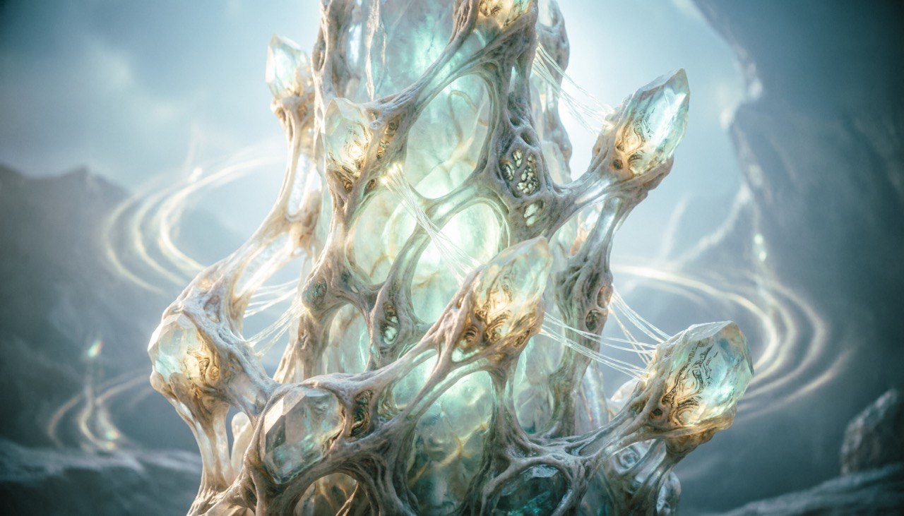
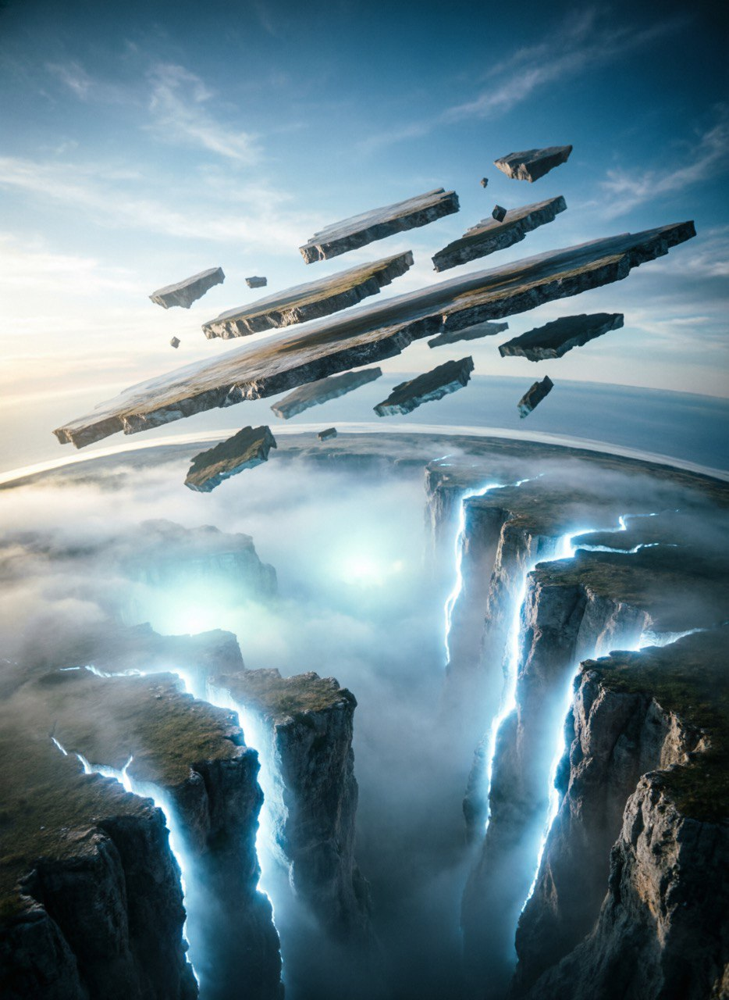

Я — хроноархитектор Таллариона, фиксатор образов, и моя задача — зафиксировать этот мир прежде, чем он начнёт растворяться. Вдоль дорог нашего края иногда можно найти кристаллы
i
Легенда о шепчущих кристаллах:
Говорят, что самые старые кристаллы Края Неполной Формы способны хранить голоса прошлого. Иногда ночью можно услышать тихий шёпот, будто сам мир вспоминает события, которые произошли много лет назад. Хранители считают, что эти звуки — остатки древней гармонии, которая существовала ещё до появления городов.
,
сквозь которые пробиваются звуки старой энергии. Проходя мимо окраин, я часто замечаю странные башни
i
Тайна незавершённых башен:
На окраине мира стоят странные башни, которые никогда не были достроены. Никто не знает, кто начал их строить и зачем. Иногда формы этих башен меняются сами по себе, словно мир продолжает создавать их даже без помощи жителей.
.
Они — немые свидетели того, как мир пытается достроить сам себя. Я не властелин событий и не творец реальности; я лишь наблюдатель, чей долг — удерживать формы, пока они ещё целы. Моя роль заключается в том, чтобы рассказать историю не для развлечения, а как последнюю меру сохранения. Мир, который вы увидите, уже на грани утраты целостности, и каждое слово, которое я записываю, служит не рассказом, а оберегом. Повествование начинается не потому, что мир нуждается в памяти, а потому что он теряет её сам, и фиксатор обязан действовать, пока ещё возможно удержать хотя бы часть образов.

Талларион не имеет привычной поверхности или планетной формы. Он состоит из множества ярусов существования — слоёв реальности, каждый из которых обладает собственной плотностью и устойчивостью образов. Ярусы не расположены сверху вниз, они сосуществуют одновременно, иногда соприкасаются, иногда расходятся, создавая сложные переплетения пространства. Пространство здесь не является постоянным. Расстояния растягиваются или сжимаются без видимой причины, и то, что кажется рядом, может внезапно удаляться. Время — осадок событий; прошлое не исчезает, а наслаивается, и в некоторых зонах старые эпохи физически соприкасаются с текущим моментом. Для большинства обитателей это — норма. Но для тех, кто способен наблюдать формы, становится очевидно: целостность мира держится на хрупком равновесии, которое может быть нарушено едва заметным сдвигом образа.
[(i)] Тайна незавершённых башен:
В Талларионе первично не вещество и не энергия, а образ — устойчивая совокупность признаков, которые делают вещь или место тем, чем оно является. Закон Сохранения Образа утверждает: пока образ целостен, объект существует; как только образ распадается, исчезает и объект, независимо от его материальной или энергетической структуры. В мире существуют места и существа, которые продолжают быть реальными лишь потому, что их формы поддерживаются памятью или вниманием. Локации, которые уже давно покинули нижние ярусы, всё ещё существуют как тени — и только фиксация образов не позволяет им окончательно раствориться. Нарушение закона ведёт к катастрофам: образы начинают искажаться, ярусы теряют устойчивость, и то, что казалось вечным, внезапно исчезает.
Сейчас мир, каким я его описываю, уже не пребывает в полной гармонии. Малозаметные признаки нарушения появляются сначала в нижних ярусах: образы объектов начинают дрожать, линии пространственных очертаний смещаются, а время в отдельных областях ускоряется или застывает. Некоторые формы выживают лишь по инерции, удерживаемые остаточной целостностью, и даже существа начинают ощущать смятение: привычные движения становятся ненадёжными, а воспоминания — чуждыми и расплывчатыми. Этот момент — не просто начало событий, а медленный перелом, подталкивающий мир к неизбежному изменению, который станет отправной точкой всех последующих событий.
Читатель, предупреждаю: то, что последует дальше, не просто история — это фиксация образов, которые могут оставаться в сознании. Внимание, с которым вы воспринимаете эти строки, невольно участвует в сохранении или разрушении мира. Каждое описание, каждая форма, каждый ярус закрепляется в восприятии, искажённое понимание может изменить его сущность. Не ищите в этих строках привычного порядка или объяснения: мир Таллариона не подчиняется линейной логике и обычным законам. Помните, чтение — это акт участия. Вы берёте на себя ответственность за образы, которые сохраняете. Некоторые вещи лучше оставить неполными, ибо полное знание в момент распада опаснее незнания.